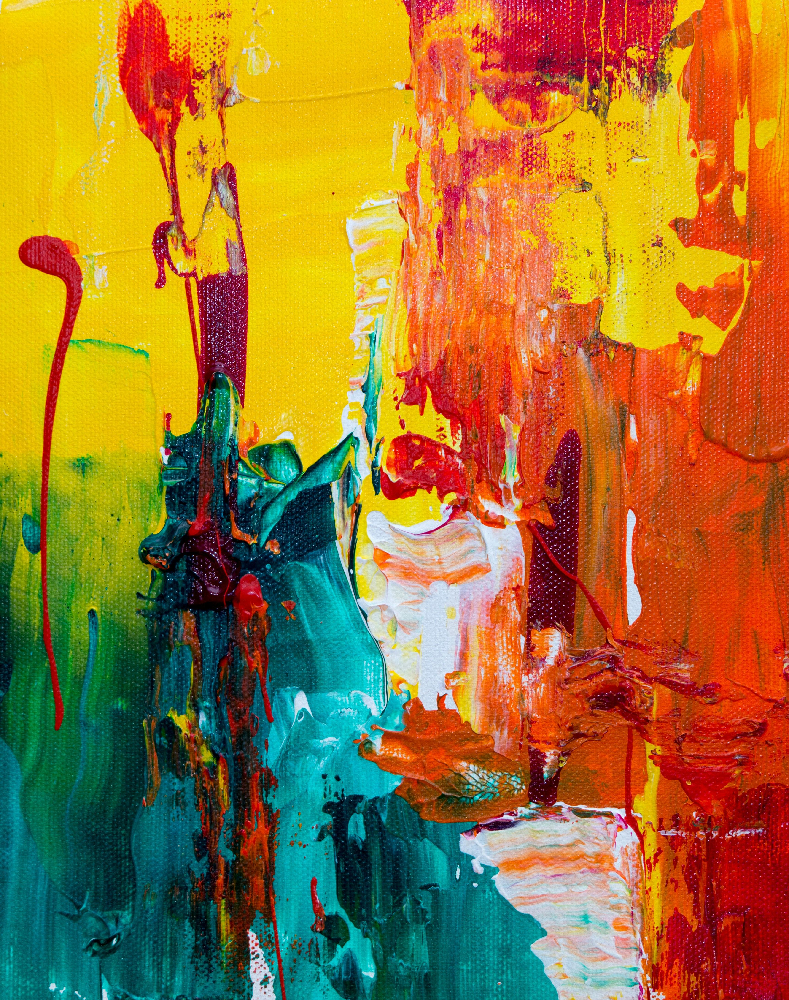

El artivismo del siglo XXI no solo busca transformar el entorno visualmente, sino intervenir de forma real en la crisis climática urbana a través de la innovación científica. La clave de esta revolución sustentable radica en el uso de pinturas ecológicas fotocatalíticas. Estas sustancias contienen un compuesto activo (generalmente dióxido de titanio) que reacciona al recibir la luz del sol de manera similar a como lo hacen las plantas durante la fotosíntesis. Mediante este proceso químico continuo, el muro absorbe y descompone los gases contaminantes del aire —como los óxidos de nitrógeno emitidos por los caños de escape de los autos— transformándolos en sales totalmente inofensivas para la salud humana.
El impacto ambiental de estas intervenciones a gran escala es verdaderamente sorprendente y medible. Se calcula que un mural mediano pintado con esta tecnología tiene la capacidad de purificar el aire con la misma eficacia que un bosque de árboles jóvenes del mismo tamaño. De esta manera, el arte urbano trasciende la mera función estética o de denuncia para convertirse en una infraestructura verde pasiva. Las paredes de cemento de los centros financieros y de los barrios industriales, históricamente asociadas a la contaminación y al gris urbano, se resignifican así como verdaderos "pulmones de color" que limpian el oxígeno que respiran miles de ciudadanos diariamente.
En el mercado actual, la tecnología detrás de estos proyectos está liderada por fórmulas innovadoras como KNOxOUT, la primera pintura diseñada específicamente para combatir el esmog urbano reduciendo los óxidos de nitrógeno. Junto a ella, marcas como Airlite, con una base ecológica libre de compuestos volátiles que repele el hollín, y Graphenstone, que combina cal tradicional con grafeno para absorber $CO_2$, se convirtieron en los insumos principales de los artistas que buscan transformar sus lienzos en herramientas de saneamiento ambiental.
Lejos de ser un experimento de laboratorio lejano, esta revolución tecnológica ya respira con mucha fuerza en las grandes ciudades de América Latina. En Chile, iniciativas masivas llenaron las medianeras de Santiago imitando la capacidad purificadora de cientos de árboles, mientras que en México y Perú, colectivos independientes recuperan zonas industriales tiñendo el cemento con murales fotocatalíticos. Argentina y Colombia no se quedan atrás, sumando programas de muralismo sustentable donde grandes marcas y municipios financian estas intervenciones para limpiar el aire de las avenidas más transitadas.

Lo más valioso de este fenómeno en nuestra región es que la ciencia no desplaza al factor humano. Las pinturas ecológicas no se aplican de forma fría o industrial, sino que se fusionan con procesos de diseño participativo y asambleas vecinales. Al involucrar a la comunidad en la creación del boceto y en la pintada del muro, el proyecto adquiere un triple impacto real: limpia el oxígeno del barrio, dinamiza la economía circular local y genera un profundo sentido de pertenencia y sanación social en el territorio.